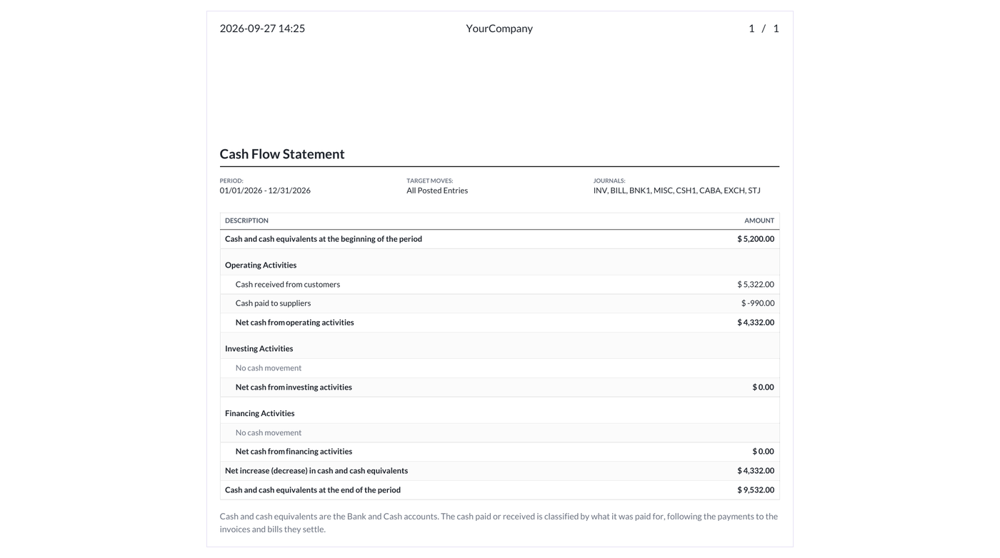
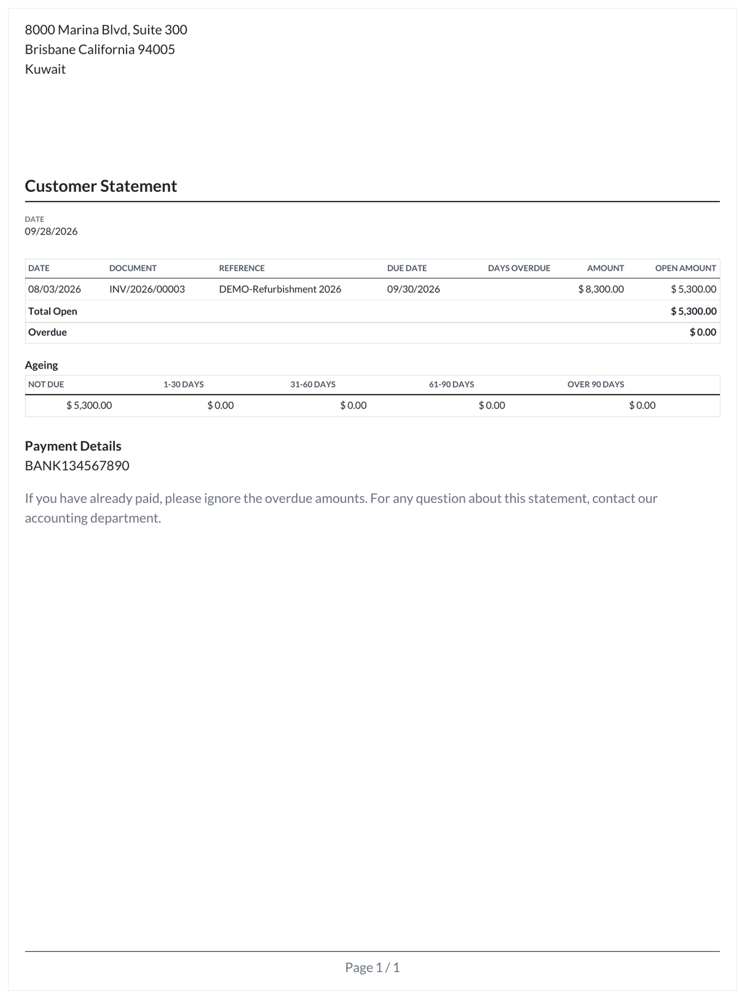

Accounting reports
Prepare financial statements and review accounting activity by company, date, journal, and entry status.
- Balance Sheet, Profit and Loss, and Cash Flow Statement.
- General Ledger, Partner Ledger, Trial Balance, and Aged Partner Balance.
- Tax Report, Open Items, Journal Audit, and customer or supplier statements.
- PDF and spreadsheet exports where supported by each report.


